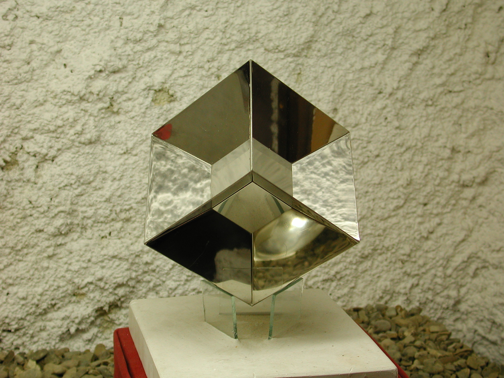

T.E.S.T (Trascinamento di Evento Spazio Temporali)
 Remo Ruffini e Attilio Pierelli durante la fase di realizzazione della scultura T.E.S.T.,
Remo Ruffini e Attilio Pierelli durante la fase di realizzazione della scultura T.E.S.T.,Roma, 1984
Subito dopo aver letto la monografia a cura di Joray, l’astrofisico Remo Ruffini chiese a Pierelli un appuntamento davanti alla Galleria Nazionale d’Arte Moderna di Roma. L’incontro, mediato dalla dottoressa Anna Imponente, si concluse con un lavoro su commissione, ossia la realizzazione di una piccola scultura da consegnare come premio al IV Marcel Grossmann Meeting e raffigurante la materializzazione di un black hole . Teorizzati e scoperti dallo stesso Ruffini negli Stati Uniti all’inizio degli anni Settanta, i black holes (buchi neri) sono delle masse stellari che, sotto l'effetto della propria gravità, vengono inghiottiti a loro volta in un collasso gravitazionale. Sono oggetti senza luce, che attraggono e risucchiano il materiale da una stella in moto rotante, e che Pierelli è riuscito a riproporre in un’immagine quasi ipnotica.
Una volta consegnate le esatte coordinate spaziali di Einstein, così da poterne ricavare una forma scientificamente coerente, Ruffini lasciò comunque a Pierelli la libertà di creare l’opera con tutti i mezzi artistici a sua disposizione. Una scommessa che lo scultore accettò e vinse clamorosamente, rappresentando con una forma plastica le precise traiettorie e reinterpretandole come oggetto estetico. Per poter realizzare un’immagine del fenomeno totalmente attendibile, l’artista si orientò attraverso un disegno grafico già esperito scientificamente ed ottenuto al computer da Ruffini ed alcuni suoi collaboratori, dell’Università di Roma e di Princeton, nel 1974. Basandosi sulla geometria delle equazioni di Einstein, tale disegno rappresentò il moto di cinque particelle nello spazio tempo, un fenomeno calcolabile ma non sperimentabile ad occhio nudo e in tempo reale, appunto un black hole. Pierelli dovette dunque procedere nell’esecuzione di una maquette che rispettasse, negli avvolgimenti e nelle torsioni, proporzioni numeriche calcolate con esattezza. Il risultato fu un oggetto dinamico, privo di alcun verso privilegiato di lettura o simmetria e senza alcun piedistallo d’appoggio che possa ricondurlo a una centralità di visione prospettica, poiché ogni punto di vista rappresenta una realizzazione compiuta e differente.

T.E.S.T., acciaio inox, cm 25,5x44,51985
 T.E.S.T., acciaio inox, cm 37x52x30
T.E.S.T., acciaio inox, cm 37x52x30Roma, Galleria Nazionale d’Arte Moderna, 1985 circa
Essendo una riproduzione attendibile del black hole, quest'opera deve essere immaginata ruotante e dalla superficie estranea a qualsiasi rapporto con la sorgente di luce naturale, nonché insensibile a qualunque effetto atmosferico. Materia, dimensione, rifinitura e tonalità dell’opera furono le caratteristiche scelte direttamente dal genio artistico di Pierelli, mentre le curvature (differenti da punto a punto nella traiettoria) vennero dosate e distribuite tenendo sempre fede alle coordinate riportate nell’equazioni.
L'intuizione estetica perseguita da Pierelli per la realizzazione di questa nuova forma, derivata dall'integrazione delle equazioni di Einstein e descrivente le geodetiche (traiettorie di gravi) intorno ad un buco nero, venne paragonata dallo stesso Ruffini alla scoperta del Pi greco e del cerchio da parte dei Greci, che portarono all'architettura ellenica e alla colonna. Questa forma, infatti, rappresenta un archetipo. Descrive un moto, ma non uno terrestre, come quello descritto dal Futurismo e da Boccioni con Forme uniche nella continuità dello spazio (1913), e nemmeno quello di un grave abbandonato al campo gravitazionale della Terra, che in quel caso cadrebbe in verticale o con moti ellittici o iperbolici. Essa risulta simile ad un anello di Moebius, ma non è semplicemente una forma conclusa, poiché è “differenzialmente” trascinata dal campo di rotazione del buco nero nella geometria dello spazio-tempo (da qui l’acronimo Trascinamento di Eventi Spazio-Temporali).
La materializzazione di questa sequenza di “eventi” viene sapientemente descritta attraverso un processo di astrazione delle sue proprietà, che permette all’immagine di ridursi ad una wesenschau , ossia ad una percezione diretta della sua essenza.
 T.E.S.T. (Trascinamento di Eventi Spazio Temporali), acciaio inox, cm 35x47x25
T.E.S.T. (Trascinamento di Eventi Spazio Temporali), acciaio inox, cm 35x47x251985